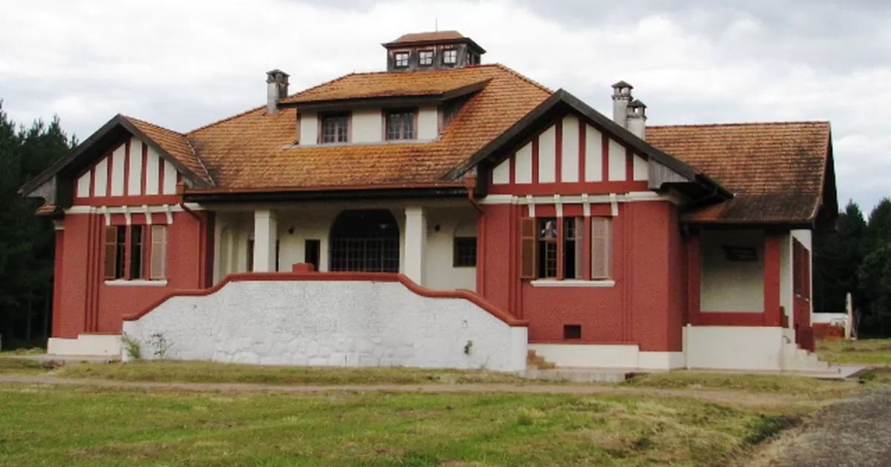
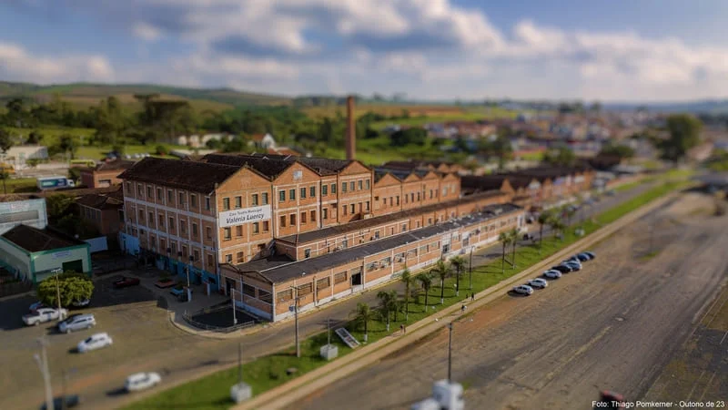
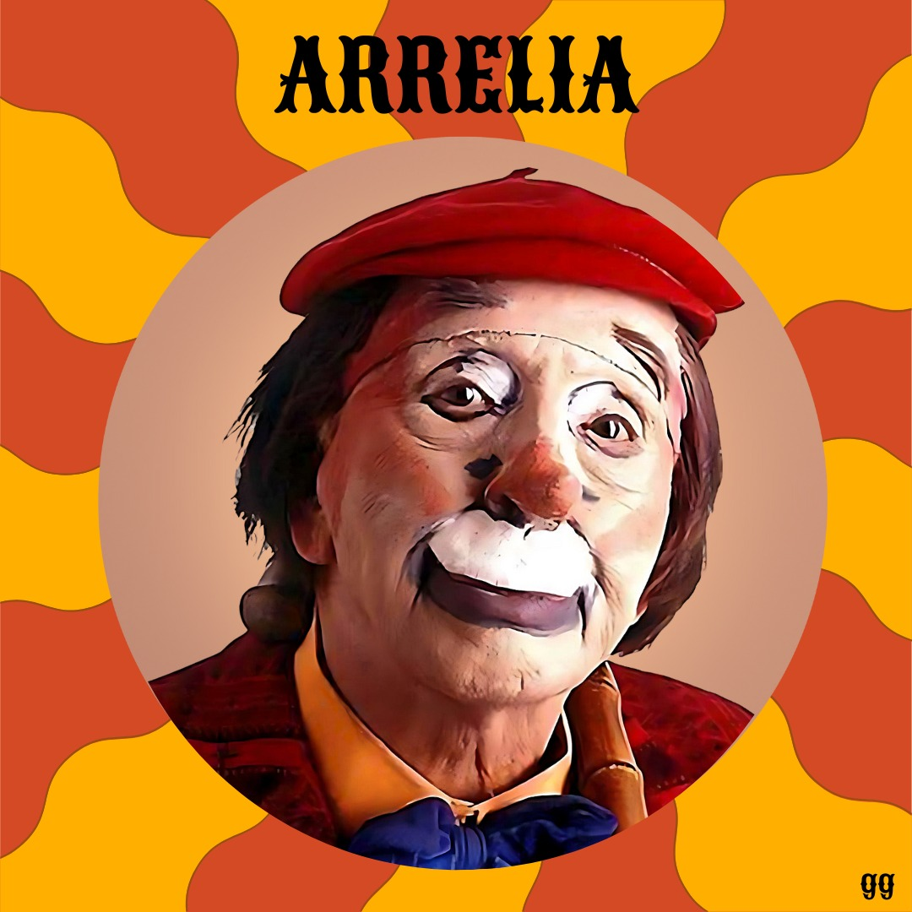
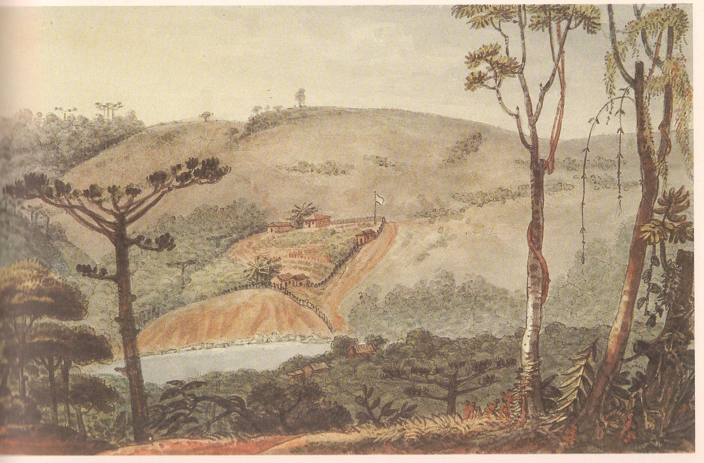
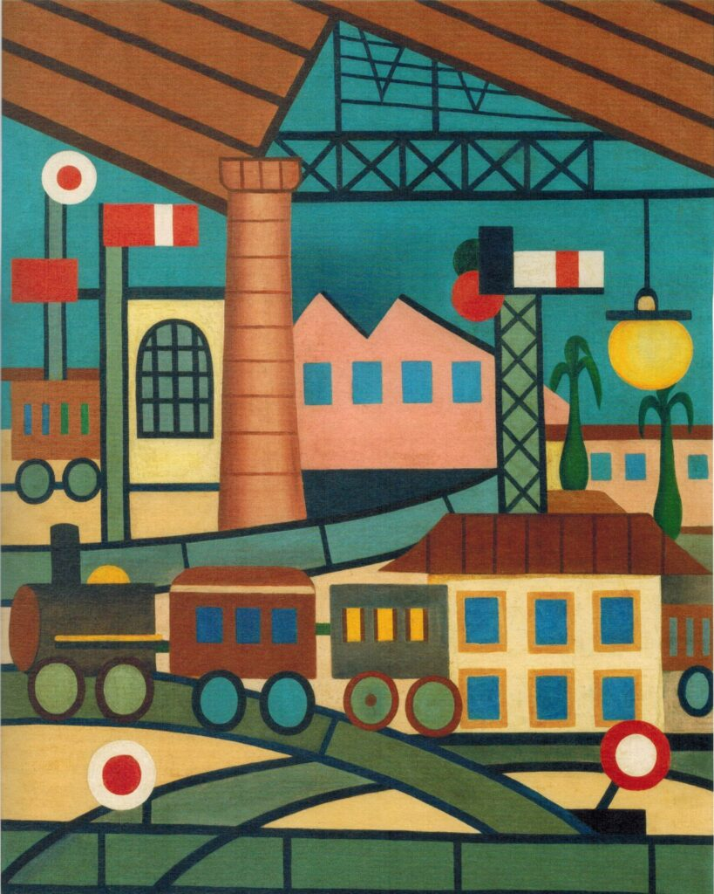

📜 HISTÓRIA
A origem de Jaguariaíva remonta ao início do século XVII, com as penetrações de bandeirantes e tropeiros que utilizavam o Caminho de Sorocaba. O nome deriva do rio local. O município se desenvolveu a partir da Fazenda Jaguariaíva, comprada em 1795 e elevada a Freguesia em 1823. A área alcançou a categoria de Vila em 1875 (restabelecida em 1892) e, posteriormente, foi elevada a Cidade em 1908.
Com a vinda do Conde Francisco Matarazzo em 1920, que através de seu Império colocou Jaguariaíva para além dos trilhos da ferrovia, o desenvolvimento da cidade ganhou novo impulso. Naquela década, o grupo Matarazzo instalou as Indústrias Reunidas Fábricas Matarazzo (IRFM). A fábrica funcionou como Frigorífico até 1964 e, depois, como Tecelagem até 1981. Paralelamente à indústria, foi construído um complexo residencial que incluía três casas: uma para o Gerente da Fábrica, a casa principal para a estadia da família Matarazzo e uma casa para os responsáveis pela manutenção do imóvel.
Hoje, o Complexo Matarazzo sedia várias empresas locais e o Cine Teatro Valéria Luercy.
 Museu histórico Conde Francisco Matarazzo/Complexo Matarazzo
🎭 CULTURA
A cultura local de Jaguariaíva é enriquecida por talentos como o Palhaço Arrelia e a Poetisa Marieta Camargo.
O Paraná também foi palco de visitas ilustres, como a do famoso pintor francês Jean-Baptiste Debret em 1827, considerado o primeiro artista com referência segura a pintar a paisagem paranaense.
Mais tarde, na arte moderna brasileira, o município de Jaguariaíva foi representado na obra de Tarsila do Amaral. Acredita-se que o quadro “A Gare” (1925), que no acervo brasileiro é conhecido como “Na Estação”, retrate a estação de trem de Jaguariaíva, na região dos Campos Gerais. Nesta obra, Tarsila utilizou uma técnica de redução dos edifícios e veículos à geometria elementar, compactando as formas achatadas como peças de quebra-cabeça, a fim de construir um todo coerente.
 🏛️ PATRIMÔNIO
Jaguariaíva abriga diversos patrimônios históricos e culturais que contam a trajetória da cidade. Destacam-se as **igrejas centenárias**, o **Museu Histórico Municipal**, e antigos casarões que preservam a arquitetura colonial. Esses locais são fundamentais para a compreensão do passado e para a valorização do presente.


🗺️ TURISMO
Natureza e Aventura A cidade é conhecida por suas paisagens naturais impressionantes, como **cânions, cachoeiras e trilhas**. É um destino ideal para quem curte ecoturismo, esportes radicais e contato com a natureza.
Conhecer jaguariaíva é se apaixonar: Véu da Noiva, Lago Azul, Escarpa Devoniana, Chalé da usina, Túnel Alagado fábio Rego, trilhas, Cachoeira das Andorinhas, Caminhada Santa do Paredão,Aqua Treking, Rapel, Rafting, cavalgada, montanhismo, lindos chalés em contato com a natureza

🖼️ GALERIA DE FOTOS
